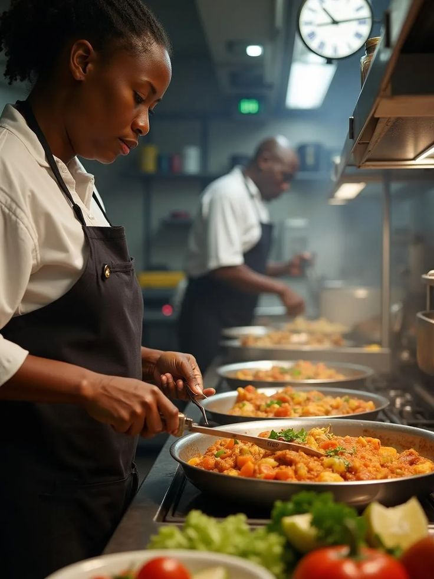

L'authenticité burkinabè au service de votre palais

Fondé avec la conviction que la cuisine traditionnelle burkinabé mérite une place de choix, A'kadi est né d'une famille de cuisiniers passionnés. Nous croyons fermement que les recettes de nos grand-mères contiennent une sagesse culinaire inestimable.
Notre restaurant combine l'authenticité des plats traditionnels avec une présentation moderne, créant ainsi une expérience culinaire unique qui honore nos racines tout en regardant vers l'avenir.
Chaque plat préparé chez A'kadi raconte une histoire - celle de notre terre, de nos producteurs locaux et de notre héritage culturel.
A'kadi n'est pas simplement un restaurant : nous sommes également un service traiteur complet pour vos événements. Que vous organisiez une réception, une cérémonie familiale ou un événement professionnel, notre cadre élégant et notre équipe dévouée sont à votre entière disposition. Dotés d'un service de livraison efficient, nous vous permettons de savourer nos délices où que vous soyez. De plus, A'kadi s'engage dans la formation des jeunes, en les initiant aux métiers de la restauration et en leur offrant une expérience professionnelle unique.
Ce qui guide chacune de nos actions
Nous privilégions les ingrédients frais et locaux pour créer des plats équilibrés qui nourrissent le corps et l'esprit. Chaque recette est conçue pour préserver les valeurs nutritionnelles de nos ingrédients.
La cuisine africaine est avant tout une cuisine de partage. Chez A'kadi, nous créons des moments de convivialité où famille et amis se retrouvent autour de plats généreux.
Nos recettes sont inspirées de celles de nos grand-mères, transmises de génération en génération. Nous préservons ces techniques culinaires ancestrales.
Nous soutenons les producteurs locaux et pratiquons une agriculture responsable. Chaque ingredient est sélectionné avec soin pour sa qualité et sa provenance.
Tout a commencé par une femme remarquable...
Maman A'kadi cuisinait et travaillait dans les foyers, préparant de délicieux repas pour les résidents. C'était son quotidien, sa passion et sa manière de subvenir aux besoins de sa famille. Mais un jour, les foyers ont cessé de recruter et Maman A'kadi s'est retrouvée au chômage.
Face à cette épreuve, elle n'a pas abandonné. Avec détermination, elle a suivi des formations pour relancer sa carrière. C'est ainsi qu'elle a appris, en plus de la cuisine africaine traditionnelle, la cuisine moderne — l'art de revisiter les classiques avec une touche contemporaine.
Son fils, témoin de son courage et de son talent, voulait réaliser le rêve de sa maman : avoir son propre restaurant où elle pourrait préparer elle-même ses plats et apporter de la joie aux autres. C'est ainsi qu'est né A'kadi — un restaurant créé par amour, pour honorer cette femme exceptionnelle.
"A'kadi, c'est plus qu'un restaurant : c'est un restaurant communautaire, un restaurant qui a la main sur le cœur."
Chez A'kadi, nous croyons que la bonne cuisine commence par de bons produits. C'est pourquoi nous privilégions les producteurs locaux — en particulier les femmes maraîchères qui pratiquent l'agriculture près des barrages.
Produite par les femmes maraîchères
Épices traditionnelles du Burkina
Provenant de fermes burkinabè
Élevages locaux
Chez A'kadi, nous nous engageons à offrir plus qu'un simple repas - nous proposons une expérience culturelle. Notre carte met à l'honneur les spécialités du Burkina Faso tout en intégrant des influences de la sous-région ouest-africaine.
Nous collaborons directement avec des fermes locales à Kombissiri pour la viande, des élevages avicoles pour nos œufs frais, et des maraîchers de Gounghin pour nos légumes et feuilles d'oseille. Cette chaîne alimentaire courte garantit la fraîcheur de nos ingrédients et soutient l'économie locale.
Notre chef, formé aux techniques traditionnelles et modernes, réinterprète avec talent les classiques de la cuisine burkinabé. Du poulet flambe au tô sauce corète, chaque plat est préparé avec le même souci du détail et le même amour pour notre patrimoine culinaire.
Les artisans de votre expérience culinaire
Fils de boucher, il a appris à lire la viande avant même de savoir lire les livres. Depuis l'enfance, entre les étals de son père et les premières braises, il a développé un instinct rare — celui de savoir exactement quand la viande est à son apogée. Aujourd'hui reconnu dans tout le Burkina Faso, il est devenu une référence incontournable de la grillade locale. Mouton, bœuf, poulet du terroir — entre ses mains, chaque pièce devient une expérience. La braise est son outil, les épices locales son langage, et la satisfaction de ses clients sa seule mesure. C'est lui qui est derrière chaque grillade que vous dégustez chez A'kadi.
La gerante et Spécialiste des plats Burkinabé, elle apporte de la douceur et de l'amour dans chacun de ses plats. on dit meme qu'aucun goumin ne resiste a ses saveurs 😜. Alors qu'attends-tu pour oublier ton ex ?
15 partenaires locaux qui fournissent chaque jour nos ingrédients frais et de qualité.